| 日付 | 2021年7月22日（木） - 2021年7月25日（日） | ||
|---|---|---|---|
| 山域 | 伊豆 | ||
| メンバー | 家族（妻、長女・10歳、長男・8歳） | ||
| 山行形態 | 子連れ3泊4日旅館泊 | ||
| アクセス | 車 | ||
| ルート (Map) |
|
2日目
6時起床。宿の部屋からは海が見える。台風の時は建物まで波が来るらしい。
この宿は比較的リーズナブルで、中がきれいに清掃されており、
料理がおいしく、女将さんは親切で、良い宿だ。
セルフサービスのところもいろいろあり、力を入れる場所と抜く場所のメリハリが効いている。
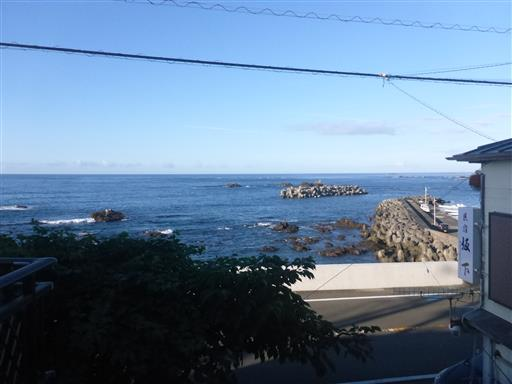
朝7時に朝食を頼み、準備をしてヒリゾ浜に向かったが、駐車場は満車。
朝5時には満車になったとのこと。この様子では明日もヒリゾ浜は無理そうだ。
あいあい岬に車を停めて、本日の計画を立てる。
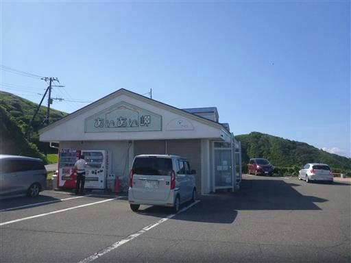
ここからヒリゾ浜を見下ろす。きれいな海だ。
前々から行きたいと思っていた場所だが、ここ数年宣伝されて
多くの人が集まるようになったことから、容易には行けない場所になってしまった。
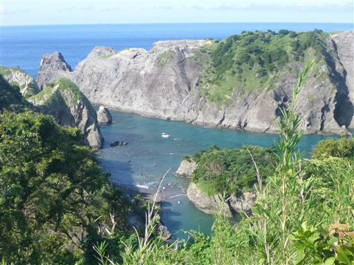
伊豆の海を眺める。この辺りは地形が急峻だ。
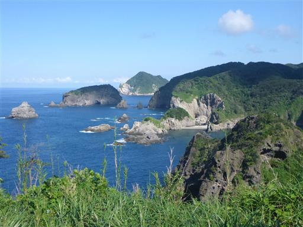
海の水が透き通っている。いつの日か機会があれば行ってみたい。
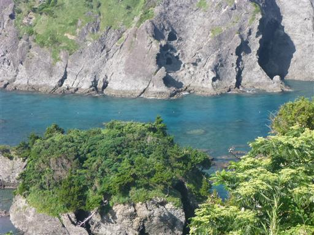
第二候補の田牛海水浴場に移動する。
ここはサンドスキーや龍宮窟などの観光地があり、目を付けていた海水浴場だ。

普段は荒崎海岸で磯遊びばかりしているので、ほぼ初めての砂浜。
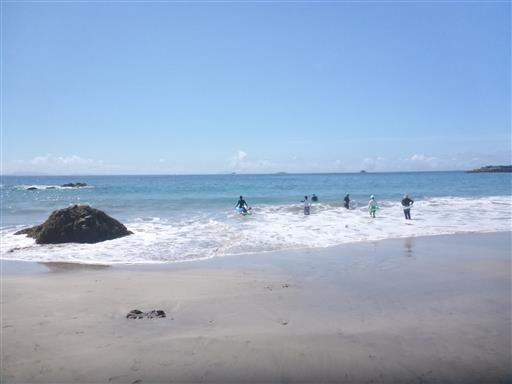
そして初めての波。
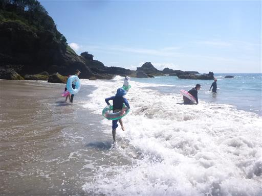
波に揉まれて遊び始める。
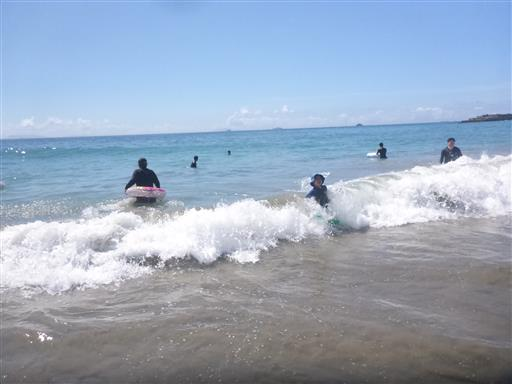
波乗りをして遊ぶ。娘は波に吹っ飛ばされてから、主に砂浜で遊び始める。
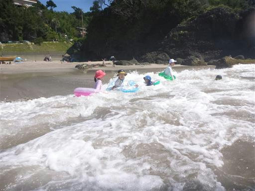
息子は果敢に挑戦。
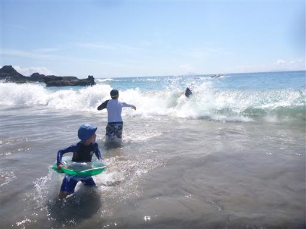
それにしても今日は波が高い。
この海水浴場は太平洋に直接面していて、波を遮るものがない。
遠くで発生した台風の影響もありそうだ。
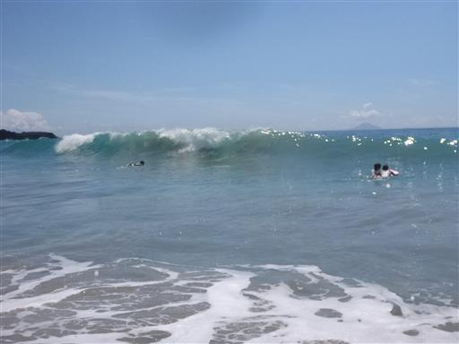
波から逃げる息子。
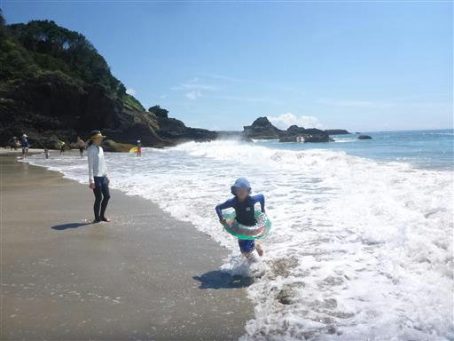
押し寄せる波。まるで壁のようだ。
波頭が崩れる前であれば、プカプカ浮いていて楽しいが、
その先の場所は波の衝撃をもろに受ける。
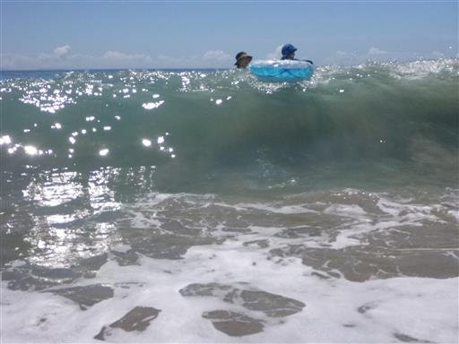
しばらく波で遊んだら、そりを借りてサンドスキー場に向かう。
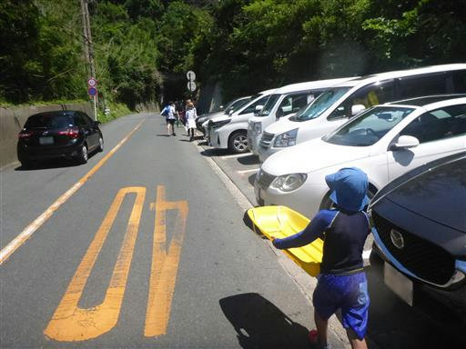
サンドスキー場が見えてきた。
強風で吹き上げられた砂が、ここに堆積してできたらしい。
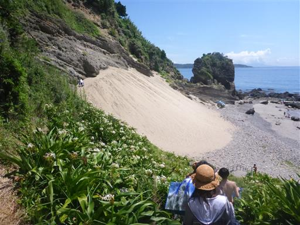
そこそこの急斜面。しかし雪ではないので、あまりスピードは出ない。
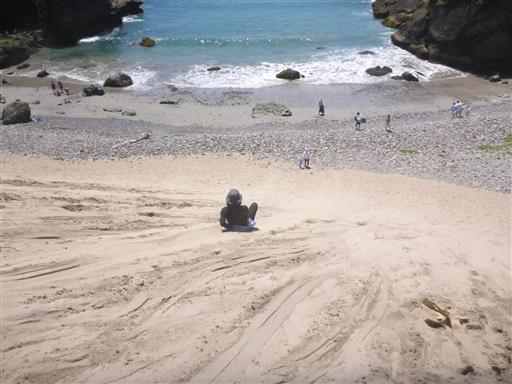
ここも小さなビーチ。
波は少々穏やかだが、砂ではなく石が多くて歩きづらい。
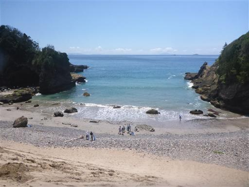
左手には大きな岩が林立している。
岩に大きな穴が開いていて、そこで休憩している人が見える。
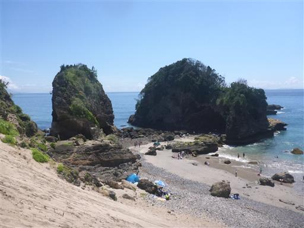
海水浴場の砂浜に戻ってくる。見事な快晴、ビーチは空いていて快適だ。
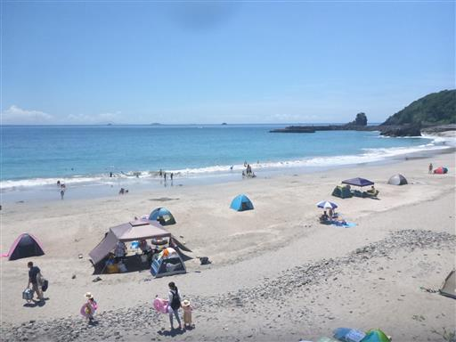
きれいなチューブ波。相変わらず波が高い。
泳ぐよりサーフィンに適しているかもしれない。
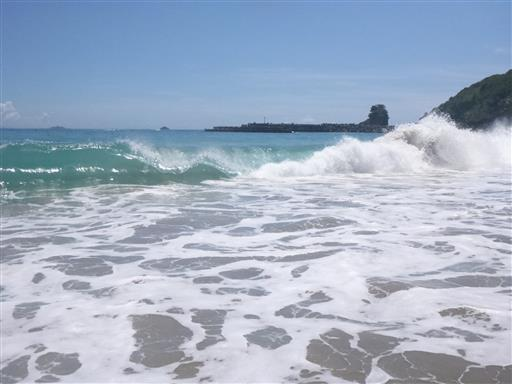
娘は砂で城を作ったり、池を作ったりして遊んでいる。
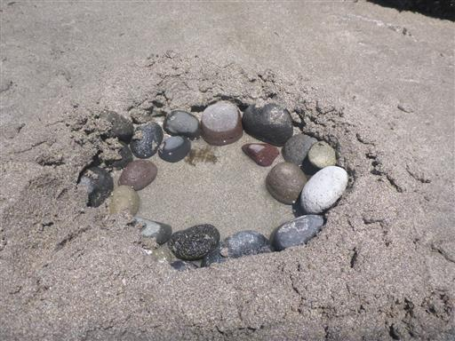
エメラルドグリーンの水の壁。こちらに向かってくると少し怖いくらいだ。
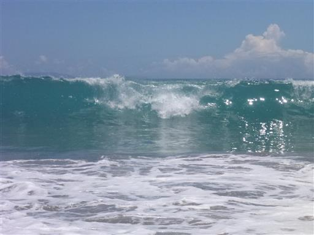
地面の砂を巻き込んで真っ黒な波になることもある。
波が来る直前はものすごい引き潮だ。
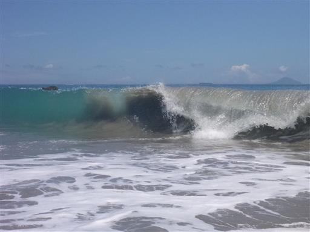
昼食はこの辺り唯一の飲食店、白浜屋で。キャパが小さいので混雑気味だ。
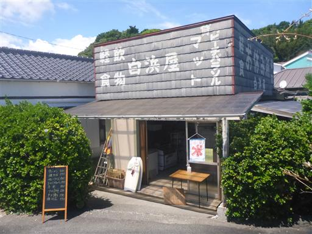
午後も海と戯れる。
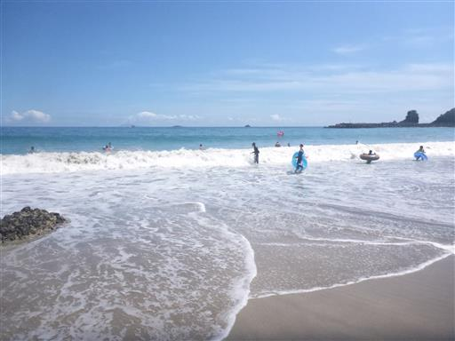
小さな波で波乗りして遊ぶ子供たち。
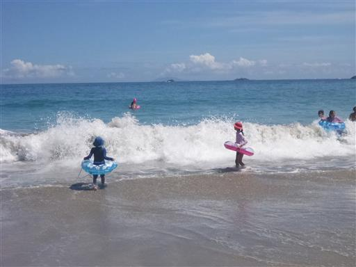
波を横から撮影したかったが、なかなか上手くいかない。
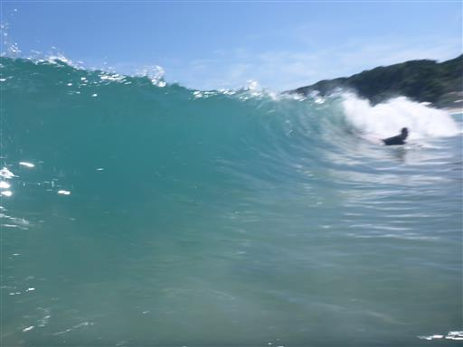
ずっと海に入って寒くなってきたので、砂浜で寝ていると、
子供たちに砂で埋められてしまう。砂の中は暖かい。
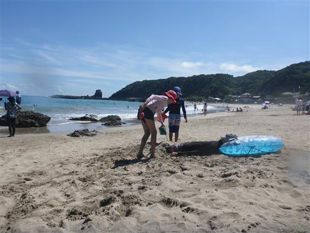
最後にもう一泳ぎして海水浴を終える。
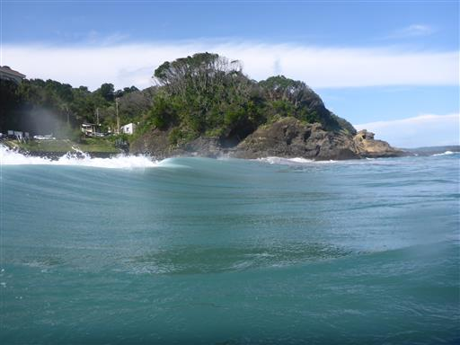
帰る前に龍宮窟を見学する。
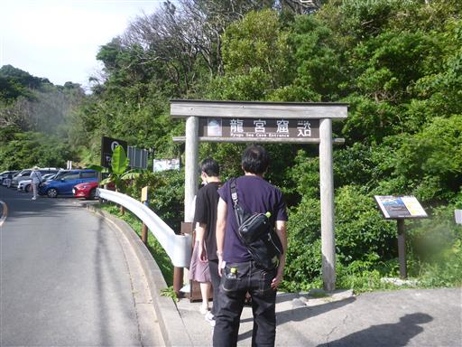
階段を下ると、ぽっかりと開けた空間が現れる。
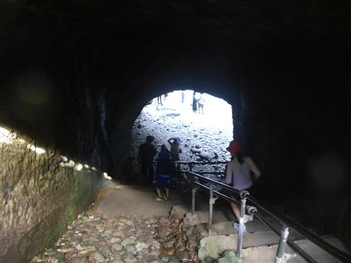
波が作った洞窟の天井が崩れてできた不思議な空間だ。
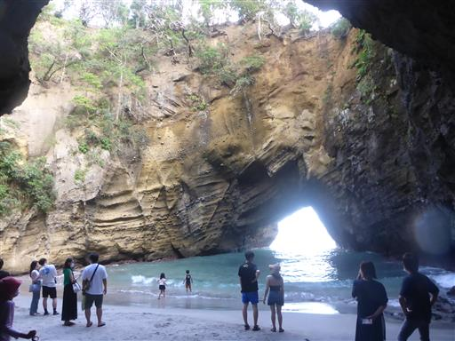
周囲の崖は切り立っている。

波が入ってくる入口は非常に小さい。
これだけ小さな入口から、よくこんなに大きな洞窟ができたものだ。
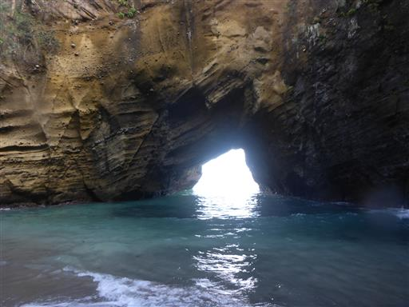
次は上から龍宮窟を眺められる道を歩く。
ちょうど、龍宮窟の穴をぐるっと一周できる遊歩道が整備されている。
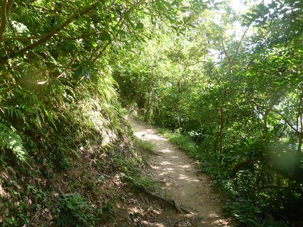
上から眺める龍宮窟。

龍王社という神社が建っている。
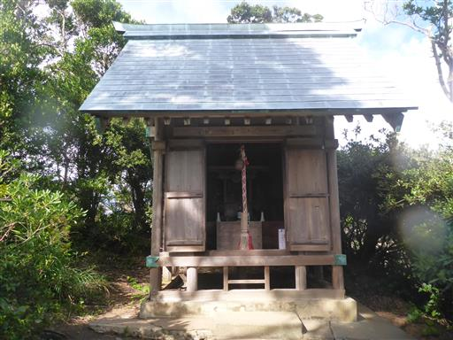
こちらの方向からは龍宮窟がハート形に見える。
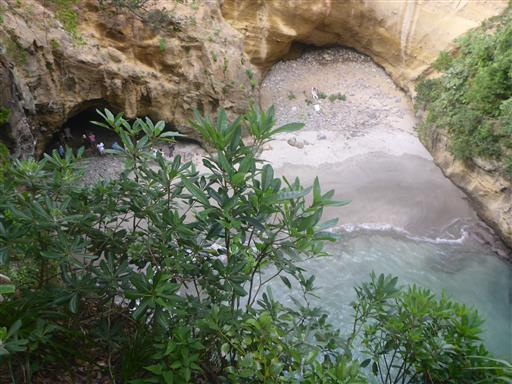
先ほど滑ったサンドスキー場も見下ろせる。
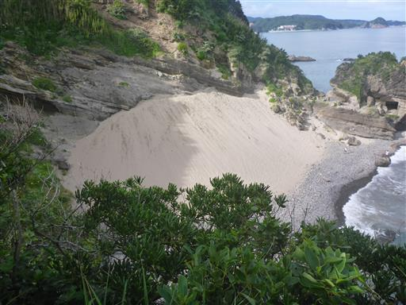
龍宮窟の見学を終えたら宿に戻る。
夕飯後にオリンピックの開会式を見ていたが、息子は途中で眠ってしまった。
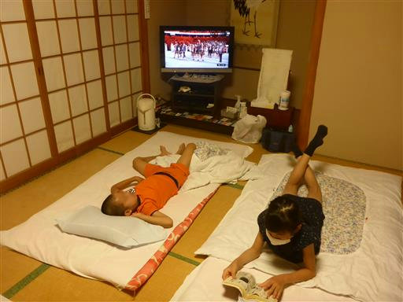